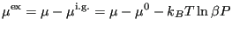
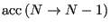

Next: Molecular Dynamics at Constant Up: Monte Carlo Simulations in Previous: Isothermal-Isobaric
So we see that volume exchanges with an ideal gas reservoir can
be used to fix the pressure of a test system. Similarly, particle exchanges with an ideal gas reservoir can be used to fix the
chemical potential  of a test system. Chemical potential is defined as
the change in free energy with particle number:
of a test system. Chemical potential is defined as
the change in free energy with particle number:
| (173) |
For an ideal gas, we know that the NVT partition function is given by
| (174) |
| (175) |
| (176) |
| (177) |
|  | (178) |
| (179) |
| (180) |
To implement a grand canonical MC simulation, the basic idea is that we allow our
system to interact with an ideal gas system at a fixed  (which is
related to a fixed
(which is
related to a fixed  , as discussed above) by exchanging
particles. The appropriate probability density is
, as discussed above) by exchanging
particles. The appropriate probability density is
| (181) |
To implement a random walk with this probability distribution, in
addition to the normal particle displacement moves, we also have
insertion and removal of particles with appropriate acceptance ratios:
| (182) | |||
|  | ![$\displaystyle {\rm min}\left[1,\frac{N}{V}\exp\left\{
-\beta\left[\mathscr{U}\left(N-1\right) - \mathscr{U}\left(N\right)+\mu^\prime
\right]\right\}\right]$](img545.png) |
(183) |
So, we can specify
of the ideal gas bath, system volume and temperature  ,
and conduct a grand canonical MC simulation from which we can observe measure pressure,
density, and excess chemical potential in our system of
interest. The code
,
and conduct a grand canonical MC simulation from which we can observe measure pressure,
density, and excess chemical potential in our system of
interest. The code mclj_muvt.c implements grand canonical MC for the Lennard-Jones fluid.
It is instructive to run this code with various values of
. For example, at  = 2.0 and
= -2.0, an initially 512-particle system at = 0.6 becomes a 436-particle systems at = 0.54:
= 2.0 and
= -2.0, an initially 512-particle system at = 0.6 becomes a 436-particle systems at = 0.54:
$ ./mclj_muvt -N 512 -rho 0.6 -T 2 -mu -2 \ -disp-wt 0.5 -nc 50000 -dr 0.5 -s 124521 -ne 1000 -rc 3.5 -prog 0 # muVT MC Simulation of a Lennard-Jones fluid # L = 9.48505; rho0 = 0.60000; mu' = -2.00000; N0 = 512; rc = 3.50000 # nCycles 50000, nEq 1000, seed 124521, dR 0.50000 NPT Metropolis Monte Carlo Simulation of the Lennard-Jones fluid in the Grand Canonical Ensemble --------------------------------------------- Number of cycles: 51000 Maximum particle displacement: 0.50000 Displacement weight: 0.50000 Temperature: 2.00000 Relative chemical potential: -2.00000 Initial number of particles: 512 Tail corrections used? Yes Shifted potentials used? No Results: Final number of particles: 408 Displacement attempts: 26058 Insertion attempts: 12384 Deletion attempts: 12558 Acceptance ratio, ptcl displ: 0.47981 Acceptance ratio, insertion: 0.08648 Acceptance ratio, deletion: 0.09357 Overall acceptance ratio: 0.28920 Energy/particle: -3.31911 Density: 0.50063 Computed pressure: 0.96980 Excess chemical potential: -0.61622 Program ends.
Why does the number of particles go down? The system is being asked to find an equilibrium in which the chemical potential is negative, yet we are apparently starting it at a state where it is more positive, so the system sheds particles. That is, our initial density corresponds to a system of higher chemical potential than what we are asking for. Conversely, if initialize at a lower density, say 0.4, then we see the number of particles increases:
$ ./mclj_muvt -N 512 -rho 0.4 -T 2 -mu -2 \ -disp-wt 0.5 -nc 50000 -dr 0.5 -s 124521 -ne 1000 -rc 3.5 -prog 0 # muVT MC Simulation of a Lennard-Jones fluid # L = 10.85767; rho0 = 0.40000; mu' = -2.00000; N0 = 512; rc = 3.50000 # nCycles 50000, nEq 1000, seed 124521, dR 0.50000 NPT Metropolis Monte Carlo Simulation of the Lennard-Jones fluid in the Grand Canonical Ensemble --------------------------------------------- Number of cycles: 51000 Maximum particle displacement: 0.50000 Displacement weight: 0.50000 Temperature: 2.00000 Relative chemical potential: -2.00000 Initial number of particles: 512 Tail corrections used? Yes Shifted potentials used? No Results: Final number of particles: 598 Displacement attempts: 26058 Insertion attempts: 12384 Deletion attempts: 12558 Acceptance ratio, ptcl displ: 0.54885 Acceptance ratio, insertion: 0.12766 Acceptance ratio, deletion: 0.11905 Overall acceptance ratio: 0.34075 Energy/particle: -2.62249 Density: 0.44318 Computed pressure: 0.88387 Excess chemical potential: -0.37246 Program ends.
Note that while these two runs purportedly aim for the same equilibrium state, they don't converge there. The second run converges to a lower pressure and more positive excess chemical potential than the first run does. This is partially due to the fact that they are different sizes so there are random errors, but it is also due to the fact that grand canonical MC simulations take a relatively long time to reach equilibrium compared to NVT MC. In practice, it can take many hundreds of thousands of cycles to generate reproducible measurements in  VT MC. Fig. 21 shows isotherms at
VT MC. Fig. 21 shows isotherms at  = 2.0 of pressure and excess chemical potential for the LJ fluid computed using
= 2.0 of pressure and excess chemical potential for the LJ fluid computed using mclg_muvt.c. These were computed using three independent trials per data point. This matches Fig. 5.8 in F&S [1].
|
|
cfa22@drexel.edu